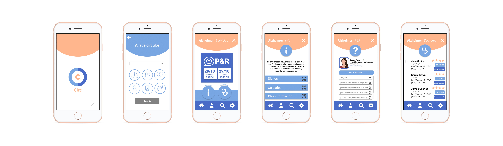
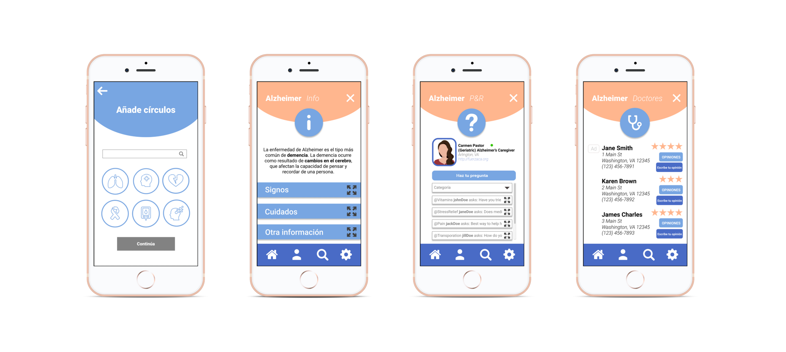

Circ
Informational and social "circles" or communities for Hispanic caregivers
what it is
Circ is an app for caregivers that addresses the distrust that often occurs between the Hispanic community and healthcare providers through communities or "circles."
main features
Users can join "circles" for each condition or disease, which provide:
- Translated medical resources to address language barrier
- Regular Q&A sessions with other caregivers to share advice and create a community
- Recommendations and ratings for local doctors from fellow caregivers to build trust with healthcare providers
what i did
role: user interface designer, user interaction designer
skills: user interviews, wireframes, prototypes
context
I was part of UVA’s team at the 2018 Caring for the Caregiver Hack, a 24-hour design sprint, along with two other students and a faculty coach. Each school was paired with a caregiver and tasked with developing a technology to help caregivers maintain their health and wellbeing. Our team was paired with a Hispanic caregiver and leader in the effort to fight Alzheimer’s disease.
process
discovery
After doing a round-table rapid interview with our caregiver, we discovered these main problem areas: resources, self-care, reminders/to-do lists, and communication. The more we talked to our caregiver, the more we recognized the overarching issue of this barrier between minority groups and healthcare providers. We felt that the category that best addressed the issue was resources.
key facts from research:
- Latinos are 1.5 times more likely than a non-Latino white to get Alzheimer’s disease (Latinos & Alzheimer’s Disease: New Numbers Behind the Crisis)
- Hispanics are the least likely racial or ethnic group to see a medical provider (U.S. Census Bureau: Health Status, Health Insurance, and Medical Services Utilization: 2010)
problem
How might we create a community-like platform for Hispanic caregivers that addresses the isolating effect and resulting trust gap of a language barrier?
ideation
Since we wanted to build a community platform, we looked towards Reddit for inspiration and adopted the Reddit AMAs for the P&R sessions (preguntas y respuestas or Q&A sessions). To help build trust between Hispanic caregivers and medical professionals, we wanted to include a doctor recommendations page to help connect trusted physicians. Physicians have the option of purchasing ad space, which would help support Circ financially but would not be taking away from the other recommended doctors. We looked towards Yelp for this ad space model since it's one of the largest review forums.
To address potential liabilities, users must acknowledge and agree to a legal disclaimer that states that the forum is not intended to be a telemedicine platform but rather a communications platform for caregiving techniques and coping strategies.
We sketched layout ideas to incorporate both the informational aspect and the social aspect of Circ before creating a prototype on Figma. We emphasized learnability and accessibility beyond the translated materials by walking the user through the main features during the onboarding process.
design

Community: Caregivers can join "circles" for each condition or disease, which allows them to find other people going through similar experiences.
Translated resources: To increase accessibility to reliable medical information and provide a centralized platform for resources, each condition or disease has an informational page to close the gap caused by the language barrier.
Q&A sessions: These sessions allow caregivers to speak with a healthcare professional that is trusted in their community and that can answer questions in Spanish, further addressing the langauge barrier.
Recommended doctors: Members of each "circle" can rate and review local medical practictioners, which allows their fellow caregivers to choose a doctor that they know is trusted by others in their community.
outcome
After presenting to national and statewide professionals in the caregiving domain, our team was awarded second place for addressing a diversity issue that wasn't tackled by other teams. If we were to revisit this project, our next steps would include:
- Conducting more user interviews from the Hispanic caregiver community as well as medical professionals to gain perspective from both sides
- Conducting deeper research into the business and liabilities aspect of creating an app with medical information
- Expanding to more languages or minority groups